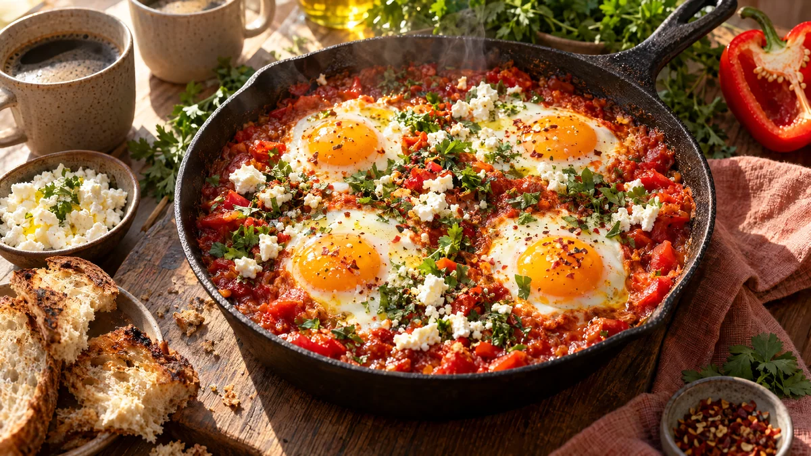

RESTFEST · RECEPTHuvudrätt · Frukost & brunch
Shakshuka med fetaost och örter
En burk krossade tomater, en lök och några ägg. Äggen sjuder i en kryddig, djupröd tomatsås tills vitan har stelnat och gulan är krämig. Toppas med smulad fetaost och gröna örter och serveras direkt i pannan, med bröd att doppa.
- Förberedelse
- 5 min
- Tillagning
- 25 min
- Portioner
- 2 (dubbla satsen i två pannor till 4)
- Nivå
- Nybörjare
 Det här behöver du
Det här behöver du
JÄMFÖRT MED DIN KYL
Tryck på + vid det du behöver köpa.
Till servering
Gör så här
- Hacka löken och skär paprikan i tunna strimlor. Skiva vitlöken.
- Hetta upp oljan i en stekpanna med lock, ca 24–26 cm, på medelvärme. Fräs lök och paprika i 5 minuter, tills de är mjuka.
- Tillsätt vitlök, spiskummin, paprikapulver och chili och fräs i 1 minut, tills det doftar.
- Rör ner tomatpuré, krossade tomater, salt och socker. Låt sjuda utan lock i 8–10 minuter, tills såsen har tjocknat.
- Gör fyra gropar i såsen med en sked och knäck ett ägg i varje.
- Lägg på locket och låt sjuda på låg till medelvärme i 5–7 minuter, tills vitan har stelnat men gulan fortfarande är krämig.
Dekoration och servering
- Smula fetaosten över tomatsåsen runt äggen, inte på gulorna, så att de syns.
- Strö över örter och nymald svartpeppar.
- Ställ pannan direkt på bordet på en träbricka och servera med rostat bröd att doppa.
- Vill du ha extra glans, droppa lite olivolja över precis före servering.
Mått och ugnstemperaturer
Måtten är svenska (dl, msk, tsk, krm). Ugnstemperaturerna gäller vanlig ugn med över- och undervärme; med varmluft, sänk med 20 grader.